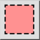
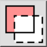

Избор на кръст
Някои инструменти за селекция могат да се използват в режим на кръстосана
селекция. В този режим се избират не само обекти, които са изцяло в дадена
област, но и обекти, които са само частично в областта. Този начин на
селектиране е известен още като "кръстосано селектиране".
Режим на избиране
Някои инструменти за селекция ви позволяват да изберете режим на селекция
в лентата с опции. Наличните режими на избор са:
- Замяна на избора:

Заменя текущата селекция с новата селекция, направена от активния
инструмент за селекция (по подразбиране).
- Добавяне към селекция:

Добавя селекцията към текущата селекция.
- Премахване от селекцията:

Премахва (изважда) селекцията от текущата селекция.
- Пресичане:

Избират се само обекти, които вече са били избрани и които отговарят
на критериите на инструмента за избор.